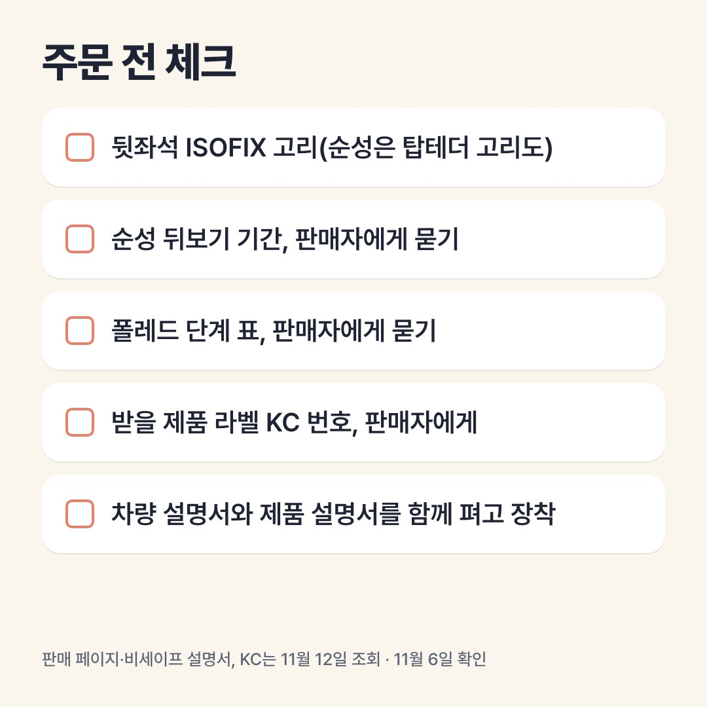

이 게시물은 쿠팡 파트너스 활동의 일환으로, 이에 따른 일정액의 수수료를 제공받습니다.
비세이프 이지턴B 몇 살까지? 키 105cm·18kg까지, 설명서 기준 약 4세
비세이프 이지턴B는 키 105cm 또는 체중 18kg 중 먼저 닿는 쪽까지 씁니다. 제조사 설명서는 연령을 약 0~4세로 적었고, 쿠팡 판매 페이지의 '신생아~5세'보다 짧게 잡는 게 안전해요. 그러니 이 카시트를 사는 집은 네 돌 무렵 주니어 카시트를 한 번 더 사게 된다는 계산을 미리 넣어 두는 게 좋습니다.

키·체중으로 보면 언제까지 어느 방향인가요?
설명서 기준이에요.
- 뒤보기: 키 40~105cm, 최대 18kg. 설명서는 가능한 한 오래 뒤보기로 쓰라고 권해요.
- 앞보기: 키 88~105cm이고, 아이가 15개월을 넘긴 뒤에만. 판매 페이지의 '16개월 이후 앞보기'는 앞보기를 시작할 수 있는 가장 이른 시점으로 읽으면 됩니다.
- 신생아 인서트: 40~87cm 구간에서, 뒤보기·가장 눕힌 자세에서만 쓰고 87cm를 넘으면 빼라고 적었어요.
89만 원짜리를 4년 쓰면, 1년에 얼마인가요?
11월 6일 쿠팡 쿠폰 적용가 891,620원을 설명서 연령 약 4년으로 나누면 1년에 약 22만 3천 원이에요. 같은 날 신생아~36kg까지 쓴다는 회전형 올인원은 순성 아크 256,800원(40~150cm, 약 12세까지 표기), 폴레드 올에이지 360 365,830원(신생아~13세 표기)이었어요. 표시 가격만 보면 비세이프가 순성의 약 3.5배, 폴레드의 약 2.4배인데 쓰는 기간은 더 짧습니다.
그래도 갈리는 지점이 있어요.
- 신생아 때 바구니 시트와 서포팅 레그, i-Size(UN R129) 표기를 원하는 집 → 비세이프 이지턴B. 세 제품 중 상세에서 R129 글자를 찾은 건 비세이프 하나예요.
- 한 대로 초등학생까지 버티고 싶은 집 → 순성 아크·폴레드가 비교 대상이지만, 둘 다 판매 페이지의 KC 번호가 11월 12일 제품안전정보센터 조회에서 '기간만료'로 나와 이 글은 링크하지 않았어요. 순성 아크는 같은 모델명의 새 번호(CA031R102-6002)가 '적합'으로 조회되니, 받을 제품 라벨 번호가 새 번호인지부터 판매자에게 확인하세요.
바구니 시트·서포팅 레그가 필요한 집, 비세이프 이지턴B — 가격·구매처 보기
비세이프도 판매 페이지 번호(CA031R037-1001A)는 '기간만료'로 조회됐지만, 같은 모델명의 새 번호 CA031R037-5003이 '적합'이에요(11월 16일 재조회도 '적합'). 주문 때 라벨 번호가 새 번호인지 물어 두면 됩니다.

우리 차에 달 수 있나요?
ISOFIX 고리가 뒷좌석에 있어야 해요. 비세이프는 ISOFIX 고리로 체결하고, 베이스의 서포팅 레그가 바닥을 받치는 방식이에요. 한 손으로 360° 돌리고 90°에서 반고정, 수평계로 각도를 본다고 나와 있어요.
설명서가 분명히 금지한 것도 세 가지 있어요.
- 에어백이 켜진 조수석에는 설치하지 않기.
- 아이를 태운 채 시트를 옆으로 돌려 둔 상태로 주행하지 않기.
- 서포트 레그는 항상 쓰기.
무게도 따져 보세요. 비세이프는 15kg(44×73×50cm), 순성 아크는 10.5kg으로 적혀 있어요. 차 두 대를 오가며 옮겨 달 집이라면 4.5kg 차이가 매번 손에 걸립니다.

커버는 빨 수 있나요?
비세이프는 커버 전체를 떼어 30°C 물에 중성세제로 세탁하고, 드라이클리닝·다림질은 피하라고 적었어요. 폴레드는 모든 패브릭 분리 세탁, 2~3개월 주기 세탁 권장이고, 순성 아크는 상세에서 세탁 방법을 찾지 못했어요.

장착은 차량 설명서와 제품 설명서를 함께 펴 놓고 하세요. 확인하지 못한 것: '기간만료'가 지금 파는 제품에 어떤 뜻인지(공식 설명 못 찾음). 직접 달아 본 글이 아니고, 가격은 11월 6일 쿠팡 표시값(할인 조건 붙은 값)이라 지금은 다를 수 있어요.
출처
- 사용 범위·설치 금지 사항·세탁: 비세이프 이지턴B 제조사 설명서와 11월 6일 쿠팡 상세 이미지
- KC 인증 조회(11월 12일·16일): https://www.safetykorea.kr/release/certDetail?certNum=CA031R037-5003